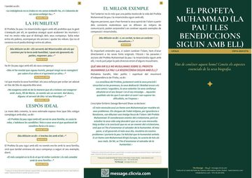

Els drets de les dones en l'islam
Traducció al català del desplegable de 6 pàgines de l'Islamic Information Center (Dubai); versicles i hadits en traducció no oficial.
Respectada, honrada, apreciada.
Introducció
Es creu que la dona a l'islam està esclavitzada, humiliada i oprimida. Però és realment així? Els milions de dones musulmanes són simplement dones esclavitzades, o aquests conceptes erronis són invencions d'alguns mitjans de comunicació?
Fa més de catorze segles, l'islam va atorgar a les dones drets dels quals la dona a Occident només ha gaudit recentment.
A la dècada del 1930, Annie Besant va constatar una veritat important quan va dir: «L'Anglaterra cristiana ha reconegut el dret de la dona a la propietat, mentre que l'islam li ha atorgat aquest dret en totes les èpoques. És una calúmnia dir que l'islam ensenya que la dona no té ànima.» [La vida i els ensenyaments de Mahoma, 1932].
Els homes i les dones descendeixen tots d'una sola persona, el profeta Adam —la pau sigui amb ell—, i l'islam no accepta per a cap dels dos res més que la justícia i el bon tracte.
Al·là, l'Altíssim, va dir: «I elles (les dones) tenen drets equivalents als que tenen ells, segons el bon costum»
Alcorà 2:228
Igualtat en la recompensa i la responsabilitat
Els homes i les dones adoren Déu de la mateixa manera; és a dir, adoren el mateix Déu (Al·là), fan els mateixos actes d'adoració, segueixen el mateix llibre sagrat i s'aferren a les mateixes creences.
Al·là —la paraula àrab per referir-se a Déu, que significa l'únic Déu veritable de tota la creació— jutja tots els éssers humans amb justícia i imparcialitat. Déu, exaltat sigui, ha afirmat l'equitat en el tracte i en la recompensa entre homes i dones en molts versicles del Noble Alcorà.
«Déu ha promès als creients i a les creients jardins per sota dels quals corren rius, on viuran eternament, i estances agradables als jardins de l'Edèn»
Alcorà 9:72
«No deixaré sense recompensa l'obra de cap de vosaltres, sigui home o dona»
Alcorà 3:195
Aquests versicles ens mostren que la recompensa depèn de les obres de la persona, no del seu sexe. El gènere no té cap paper en la recompensa o el judici d'una persona.
Si comparem l'islam amb altres religions, veurem que l'islam proporciona justícia entre els gèneres. Per exemple, l'islam rebutja la idea que Eva tingui més culpa que Adam per haver menjat de l'arbre prohibit. Segons l'islam, Adam i Eva van pecar tots dos, i Déu va acceptar el seu penediment i els va perdonar.
Igualtat en el dret al coneixement
L'home i la dona tenen igualment el manament d'adquirir coneixement. El Profeta (la pau sigui amb ell) va dir: «La recerca del coneixement és una obligació per a tot musulmà».
Així mateix, hi va haver dones musulmanes erudites en temps del Profeta (la pau sigui amb ell), algunes de la seva pròpia família, altres d'entre els seus companys o les seves filles. Entre les més destacades hi ha Aïxa, esposa del Profeta (la pau sigui amb ell), de qui es va transmetre una quarta part de la llei islàmica.
També hi va haver altres dones juristes i erudites de les quals van aprendre grans i reconeguts savis.
Igualtat en el dret a triar marit
L'islam va honorar la dona atorgant-li el dret a triar marit i a conservar el seu cognom familiar després del matrimoni. Tot i així, molts tenen la impressió que els pares obliguen les filles a casar-se, però aquesta és una pràctica cultural sense fonament en l'islam i, de fet, està prohibida per la llei islàmica.
En temps del Profeta (la pau sigui amb ell), una dona va anar a trobar-lo i li va dir: «El meu pare m'ha casat amb el meu cosí per elevar el seu estatus a la tribu, sense el meu consentiment». Aleshores el Profeta (la pau sigui amb ell) va fer cridar el pare i, en presència seva, va donar a la dona el dret de mantenir el matrimoni o d'anul·lar-lo.
Ella va respondre: «Accepto el que ha fet el meu pare, Missatger de Déu, però volia mostrar a les dones que els homes no tenen un poder absolut en això».
Iguals, però diferents
Tot i que homes i dones gaudeixen de drets iguals com a principi general, els drets i les responsabilitats específics concedits a cadascú no són idèntics.
Homes i dones tenen drets i deures complementaris, no iguals. Més enllà de les diferències anatòmiques externes i internes, els científics saben que hi ha moltes diferències en la manera com el cervell masculí i el femení processen el llenguatge, la informació i les emocions.
Per exemple, Edward Wilson, expert en biologia social de la Universitat Harvard, diu: «Les dones tendeixen a ser superiors als homes en habilitats verbals, empatia i habilitats socials, mentre que els homes —entre altres coses— tendeixen a ser superiors en independència, domini, habilitats espacials i matemàtiques, així com en agressivitat relacionada amb l'estatus i altres característiques.»
Per tant, no és savi tractar els dos gèneres de la mateixa manera i ignorar-ne les diferències.
L'islam ensenya que homes i dones tenen papers complementaris, encara que diferents, i cadascun més adequat a la seva naturalesa.
Al·là, l'Altíssim, va dir:
«I l'home no és com la dona»
Alcorà 3:36
«No ho ha de saber Aquell que ha creat, essent Ell el Subtil, el Coneixedor?»
Alcorà 67:14
La unitat familiar
Déu va crear homes i dones perquè fossin diferents, amb rols, habilitats i responsabilitats únics. Aquestes diferències no són senyal de superioritat o inferioritat, sinó d'especialització i complementarietat.
La família té una importància central a l'islam: l'home és responsable del benestar material de la llar, mentre que la dona contribueix al benestar físic, educatiu i emocional.
Això fomenta la cooperació en lloc de la competència, ja que cadascú compleix les seves responsabilitats mútues, i així es construeixen famílies fortes i, per tant, societats cohesionades.
També, des del punt de vista emocional, homes i dones només assoleixen la veritable felicitat junts. Déu ho descriu d'una manera bellíssima:
«Elles són un vestit per a vosaltres i vosaltres sou un vestit per a elles»
Alcorà 2:187
El vestit proporciona comoditat, escalfor i seguretat, a més d'embellir i cobrir els defectes.
Així és la relació entre els esposos: cadascun és empara i refugi de l'altre.
L'amor i la misericòrdia en la relació matrimonial
El Profeta (la pau sigui amb ell) va exhortar els marits a tractar les seves esposes de la millor manera: «El millor de vosaltres és aquell que és millor amb la seva família» (Tirmidhi 3895).
A Aïxa, esposa del Profeta (la pau sigui amb ell), li van preguntar com es comportava ell a casa, i va respondre: «Era com qualsevol de vosaltres a la seva llar, però més amable i generós. Sempre estava disposat a donar un cop de mà a les seves esposes en les tasques domèstiques habituals: es sargia la roba, s'adobava el calçat i, en general, col·laborava en qualsevol feina que elles fessin».
Al·là, l'Altíssim, va dir: «I entre els Seus signes hi ha que va crear per a vosaltres esposes d'entre vosaltres mateixos, perquè hi trobeu tranquil·litat, i va posar entre vosaltres afecte i misericòrdia. Certament en això hi ha signes per als qui reflexionen»
Alcorà 30:21
L'alt estatus de les mares i les filles
La mare té la influència més gran sobre l'infant, especialment en els primers anys, amb la seva tendresa, la seva cura i el seu amor.
No hi ha dubte que l'èxit de la societat es deu a les mares; per això l'islam, amb tota justícia, l'honora i n'eleva la posició.
Déu va dir a l'Alcorà:
«I hem encomanat a l'ésser humà que tracti bé els seus pares; la seva mare el va portar amb fatiga i el va infantar amb fatiga»
Alcorà 46:15
Van preguntar al Profeta (la pau sigui amb ell): «Oh Missatger de Déu, qui té més dret a la meva bona companyia?» Va respondre: «La teva mare». L'home va preguntar dues vegades més: «I després qui?», i el Profeta va donar la mateixa resposta. Només la quarta vegada li va dir: «Després, el teu pare». (Al-Bukhari 5971, Muslim 2548)
La recompensa no es concedeix només pel bon tracte a les mares, sinó que l'islam assigna una recompensa especial per criar filles, una recompensa que ni tan sols es concedeix per criar fills barons.
El Profeta (la pau sigui amb ell) va dir: «A qui tingui tres filles i en tingui cura, sigui misericordiós amb elles i les mantingui, el Paradís li serà assegurat». Algú va preguntar: «I si són dues?», i va respondre: «També dues». I alguns dels presents van pensar que, si li haguessin preguntat per una de sola, hauria dit: «També una» (Ahmad 14247).
Conclusió
Abans de l'islam, la dona era considerada una vergonya; les nenes eren enterrades vives, la prostitució estava estesa, el divorci només estava en mans del marit, l'herència pertanyia només als poderosos, i prevalien l'opressió i la injustícia.
Aleshores va venir l'islam, va abolir aquestes pràctiques i va retornar a la dona la seva dignitat i els seus drets.
Fins i tot avui, als països més avançats, les dones encara no reben el respecte, l'honor i el reconeixement que mereixen, ni tampoc la igualtat salarial per la mateixa feina. En canvi, l'islam les considera valuoses i dignes, i prohibeix menysprear-les o humiliar-les.
El maltractament de les dones en alguns països de l'Orient Mitjà o en algunes famílies musulmanes es deu a factors culturals seguits erròniament per alguns musulmans, no a l'islam.
Altrament, per què tantes dones abracen voluntàriament l'islam si realment fos una religió opressiva?
I concloem amb les paraules del nostre Senyor, Creador i Sustentador de tots:
«Certament, els musulmans i les musulmanes, els creients i les creients, els devots i les devotes, els veraços i les veraces, els pacients i les pacients, els humils i les humils, els caritatius i les caritatives, els qui dejunen i les qui dejunen, els qui guarden la seva castedat, homes i dones, i els qui recorden molt Déu i les qui recorden molt Déu: Déu ha preparat per a tots ells el perdó i una recompensa magnífica»
Alcorà 33:35
* Traducció no oficial del sentit, feta per a aquest fullet: no existeix cap traducció oficial de l'Alcorà ni dels hadits en català. Traducció oficial en castellà: quranenc.com/es
Traducció al català del fullet de l'Islamic Information Center (Dubai) · www.islamicic.com


Fullets per imprimir
 Introducció a l'islam: un estil de vida pràctic i equilibrat
Introducció a l'islam: un estil de vida pràctic i equilibratCatalà

El Profeta Muhammad: has de conèixer aquest home!Català
 Jesús: un profeta de Déu
Jesús: un profeta de DéuCatalà
 El concepte de Déu en l'islam
El concepte de Déu en l'islamCatalà
 L'Alcorà: l'última revelació a la humanitat
L'Alcorà: l'última revelació a la humanitatCatalà
 Quin és el propòsit de la vida?
Quin és el propòsit de la vida?Català
 Idees equivocades sobre l'islam
Idees equivocades sobre l'islamCatalà
 Els miracles científics de l'Alcorà
Els miracles científics de l'AlcoràCatalà
 La mort i el més enllà
La mort i el més enllàCatalà